5弾（GD05 Freedom Ascension）を大会で使えるようになった8/1から、GD06を使えるようになる前の11/6までの入賞デッキをまとめました。5.5弾（ST11〜ST14）のカードが大会に出てくる10/3を境に、8/1〜10/2を「5弾環境」、10/3〜11/6を「5.5弾環境」と呼んで比べています。5弾環境は849大会・入賞8,087デッキ、5.5弾環境は353大会・入賞3,392デッキです。
デッキカラーの入賞割合
| デッキカラー | 5弾環境 8/1〜10/2 | 5.5弾環境 10/3〜11/6 | 差 |
|---|---|---|---|
| 赤/白 | 16.9% （1,366） | 24.4% （829） | +7.5pt |
| 緑/紫 | 15.5% （1,256） | 19.8% （672） | +4.3pt |
| 青/白 | 18.1% （1,460） | 15.1% （511） | −3.0pt |
| 青/紫 | 17.7% （1,430） | 14.7% （497） | −3.0pt |
| 青/緑 | 19.2% （1,553） | 13.4% （456） | −5.8pt |
| 青/赤 | 8.1% （658） | 3.2% （109） | −4.9pt |
| 赤/紫 | 1.4% （111） | 3.2% （109） | +1.8pt |
| 緑/白 | 1.0% （77） | 3.0% （103） | +2.1pt |
| その他 | 2.2% （176） | 3.1% （106） |
週ごとの推移
赤/白 緑/紫 青/白 青/紫 青/緑 青/赤
横は週（土曜はじまりの7日間。日付はその週の始まり）、縦はその週の入賞デッキに占める割合です。線の色は上の凡例のとおりです。点線の縦線から右が5.5弾環境です。
約一ヶ月ほどは青緑のνガンダム[GD05-017]デッキがかなり猛威を奮っていた事がグラフを見るとよく分かる。
この時期はHP6ベースやアーガマ[GD02-129]を多く採用しどのデッキも対策に奮闘していた頃だろう。
GD05の発売時にνガンダム[GD05-017]と肩を並べて注目されていたストライクフリーダムガンダム[GD05-002]を採用したデッキは序盤の青緑に翻弄される形となり、なかなかシェアを伸ばす事が出来ずにいただろう。
ただし、青緑の対策がベースである程度可能と言う事が分かってから少しずつシェアを奪うような形になっていた。
制限を受けたが広い役割を持てる青紫は相変わらず5弾スタート時も良いポジションに付きこれから万全では無くともまだまだ戦える形を皆が予想していたのでは無いかと思われる。

5弾開始時に新しいデッキタイプとして赤白MFが5弾から登場し各プレイヤーはデッキ構築に励んだだろう。
5弾開始直後は赤白MFに関して研究が進まず、入賞もなかなか振るわない時期があったが研究が進むに連れて様々な状況にも対応ができるポテンシャルがある事が分かり、使用率や入賞率が日を追うごとに増えてきた。
プレイ難易度も高めのデッキがここまで研究が出来たと言うことは、今後も新しいデッキタイプが出る場合の糧になると感じる。
5弾では他にも様々な強力なカードが様々登場し緑紫にはシャア・アズナブル[ST03-011]と同名のシャア・アズナブル[GD05-093]を獲得した、5弾前から紫の強さは様々なプレイヤーが認知していたこともあり、シャア・アズナブルで緑と紫の両方を使えるようになったのは非常に喜ばしいと思ったプレイヤーは多かっただろう。
実際赤白MFと同様に最初は入賞率も低かったが、時間が立つに連れて入賞率も伸び最終的には赤白MFに次ぐ2位の入賞率となった。


5弾で非常に大きな強化を貰ったデッキは概ねこれらのデッキにはなるが、その他にも小さな強化が各デッキにあり様々な試行錯誤が合ったシーズンだったと言える
スタートデッキST11～14が利用可能になった5.5弾では事前評価の高いカードが多数あり、環境の変化に注目をしていた。
どのデッキにも利用可能性の高いカードが含まれており、このスタートデッキから新しいデッキタイプが環境入りするようなことは残念ながらなかったが、様々なカードに強化が入ったことにより、今まで少しパワーの足りなかったデッキたちにも脚光を浴びる可能性を高めたと言えよう。
5.5弾でデッキに採用されたカードたちは別の項目で紹介するためここでは控えるが、デッキ単体で強いと言うより様々なデッキにパーツが利用できる商品だったと言える。
最終的には赤白MFが入賞1位と言う形となるのだが、グラフの右側に注目してほしい。
10/24時点ではかなり赤白が高い入賞率を誇っていたのだが、次週では緑紫と肉薄するような入賞率に変わってきている。
明確な原因自体は確認することが出来なかったが、次への環境遷移をこのタイミングから感じ取れるとも言えよう。
かなり下火になっていた、青緑も最終週には復権の兆しがあるため注目しておいて損は無いだろう。
デッキカラー相性表
5弾環境（8/1〜10/2）
| 自分 ＼ 相手 | 青/白 | 青/紫 | 青/緑 | 赤/白 | 緑/紫 | 青/赤 |
|---|---|---|---|---|---|---|
| 青/白 | — | △ 51.9% （553組） | ○ 52.6% （492組） | △ 50.4% （552組） | ○ 53.9% （477組） | ○ 55.7% （262組） |
| 青/紫 | △ 48.1% （553組） | — | ▲ 45.9% （538組） | △ 49.3% （540組） | ○ 52.8% （447組） | ○ 56.8% （222組） |
| 青/緑 | ▲ 47.4% （492組） | ○ 54.1% （538組） | — | ▲ 44.0% （498組） | ▲ 46.1% （408組） | ○ 56.2% （240組） |
| 赤/白 | △ 49.6% （552組） | △ 50.7% （540組） | ○ 56.0% （498組） | — | △ 49.9% （431組） | △ 52.5% （221組） |
| 緑/紫 | ▲ 46.1% （477組） | ▲ 47.2% （447組） | ○ 53.9% （408組） | △ 50.1% （431組） | — | ◎ 58.6% （203組） |
| 青/赤 | ▲ 44.3% （262組） | ▲ 43.2% （222組） | ▲ 43.8% （240組） | △ 47.5% （221組） | × 41.4% （203組） | — |
比べた数が7位以下で表に載せていないデッキカラーは、赤/緑（151組）、赤/紫（134組）、緑/白（117組）、白/紫（99組）、紫（6組）です。
5.5弾環境（10/3〜11/6）
| 自分 ＼ 相手 | 赤/白 | 緑/紫 | 青/紫 | 青/白 | 青/緑 |
|---|---|---|---|---|---|
| 赤/白 | — | ○ 54.3% （350組） | △ 48.1% （270組） | △ 51.8% （249組） | ▲ 46.3% （259組） |
| 緑/紫 | ▲ 45.7% （350組） | — | ▲ 45.0% （180組） | △ 52.1% （169組） | ▲ 45.5% （202組） |
| 青/紫 | △ 51.9% （270組） | ○ 55.0% （180組） | — | ○ 56.4% （179組） | △ 51.1% （139組） |
| 青/白 | △ 48.2% （249組） | △ 47.9% （169組） | ▲ 43.6% （179組） | — | × 40.7% （123組） |
| 青/緑 | ○ 53.7% （259組） | ○ 54.5% （202組） | △ 48.9% （139組） | ◎ 59.3% （123組） | — |
青/赤は、ほかのどのデッキカラーとも100組に届かないので表から外しています。比べた数が7位以下で表に載せていないデッキカラーは、赤/紫（175組）、赤/緑（171組）、緑/白（145組）です。
◎ 57.5%以上 ○ 52.5%超〜57.5%未満 △ 47.5%〜52.5% ▲ 42.5%超〜47.5%未満 × 42.5%以下 － 100組未満。記号は四捨五入する前の勝率で決めているので、表示が同じ52.5%でも記号が違うことがあります。
デッキカラーごとの採用カード（5.5弾環境）
採用率は、5.5弾環境でそのデッキカラーの入賞デッキのうち、そのカードを1枚以上入れた割合です。上位3枚に加えて、5弾環境から採用率が10pt以上上がったカードのうちいちばん上がった1枚（急上昇。5.5弾のカードは除く）と、採用率10%以上の5.5弾（ST11〜ST14）のカードを2枚まで載せています。
赤/白 5.5弾 829デッキ（割合 24.4%）・5弾 1,366デッキ


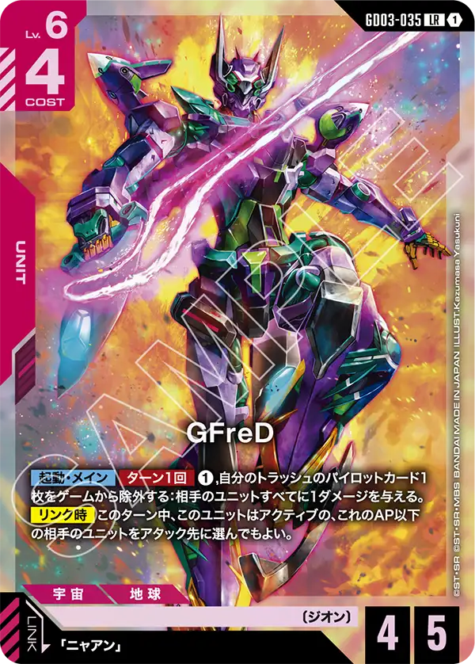


赤白の採用上位は溢れる慈愛[GD01-118]とダークネスフィンガー[GD05-110]、シルヴァ・バレト[GD04-068]の3種でいずれも90%を超える採用率となった。
いずれのカードも汎用性の非常に高いカードたちで赤白でなくても採用することを前提にデッキを構築するプレイヤーも多いカードたちといえる。
特にダークネスフィンガー[GD05-110]は5弾のカード群でも事前評価も非常に高いカードでこのカードを最大限使う事ができるから赤白でデッキを組むことにしたプレイヤーも多いだろう。
ここでは載せきれないが、他のカードたちも軒並み90%近い採用率を誇るカードがたくさんあり、デッキとしての完成度の高さがうかがえる。
急上昇カードはGFreD[GD03-035]、初期は採用されていなかったが、トラッシュに移動したパイロットを有効利用することができること、低HPのユニットをまとめて除去できる可能性があることから採用数が高くなったのだろう。赤白MFではトラッシュに移動したカードも効果コストとして利用するのでその知見を活かした採用だと考えられる。
ST11~14ではガンダム・エアリアル[ST13-006]とスレッタ・マーキュリー[ST13-012]がデッキ採用されるような形になったが、赤白MFとは異なるデッキタイプでの採用となったため、まとめて説明することは難しいといえる。
今後も〔学園〕のカードは赤色で登場することが予想されるためこのカードの存在はぜひとも覚えておきたい。
緑/紫 5.5弾 672デッキ（割合 19.8%）・5弾 1,256デッキ


一口に緑紫と言っても中身は様々な型があるといえる。完全にアグロに寄せた型や鉄華団を多めに採用したバーン寄りのデッキ、ジオング[GD04-017]を採用したミットレンジに寄せた型など言い始めればきりが無いほど幅が広いデッキといえる。
その中でもやはり採用率が高かったカードはザクⅡ[ST03-008]、ザクⅡ（シャア・アズナブル機）[ST03-006]だ。
同じST03で登場したカードで緑がアグロたらしめるカードといえばこれらとリック・ドム[GD01-030]になると言うレベルで重要カードとなっている。
禁止ペアの採用に寄り勢いをそがれることは必須となっていた緑のデッキタイプもこれらのカードが非常に強い土台となっていたため、大きく評価を損なうような形にならなかった。


その他にも採用率の高いカードとしてガンダム・バルバトスアダプト[GD03-056]が上げられる。
これは紫の鉄華団と言えばこのカードといえるレベルで汎用性も高くステータスも申し分無いカードだ。
あまりの汎用性の高さから以前はガンダム・バルバトス（第1形態）[GD02-054]や三日月・オーガス[ST05-010]とまとめてセットで利用されていたが、ガンダム・バルバトスアダプト[GD03-056]単体でもデッキに採用されるレベルになっている。
急上昇カードでもあるガンダム・グシオンリベイク[GD02-055]と似たような効果を持つため、出張パーツとして今後も採用されるだろう。


ST13から新たに採用されたカードとしてキュベレイ[ST13-001]とハマーン・カーン[ST13-011]がある。
発表時からとても注目を集めていたカードでトークンを利用して相手のユニットとバトルをさせるこのカードは非常に強力だと言うことで採用が相次いだ。
ファルメル[ST03-016]の効果で配備できるザクⅡ（シャア・アズナブル機）[T-006]もトークンなら何でも効果対象に選択ができるため、非常に相性が良いカードとされる。
ハマーン・カーン[ST13-011]はパイロットを手札に加える事ができるカードだが、リンク時では無くセット時に誘発する点やユニットのレベル以外に目立つ条件も無いため、このカード単体での採用があるデッキも今後登場するのではないかと思われるほど汎用性の高いカードとなっている。
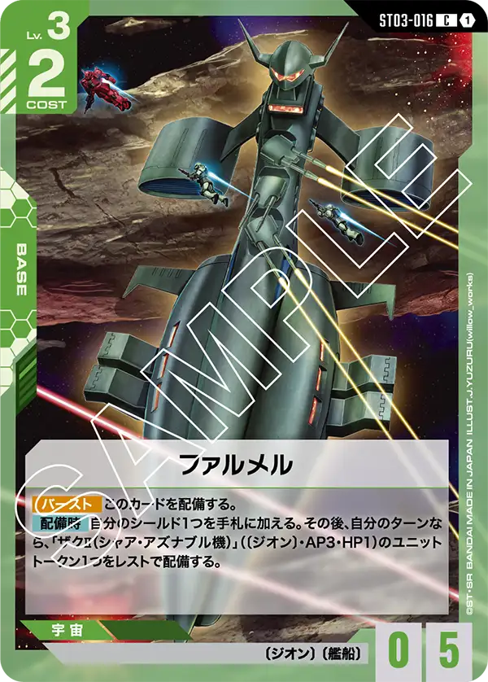
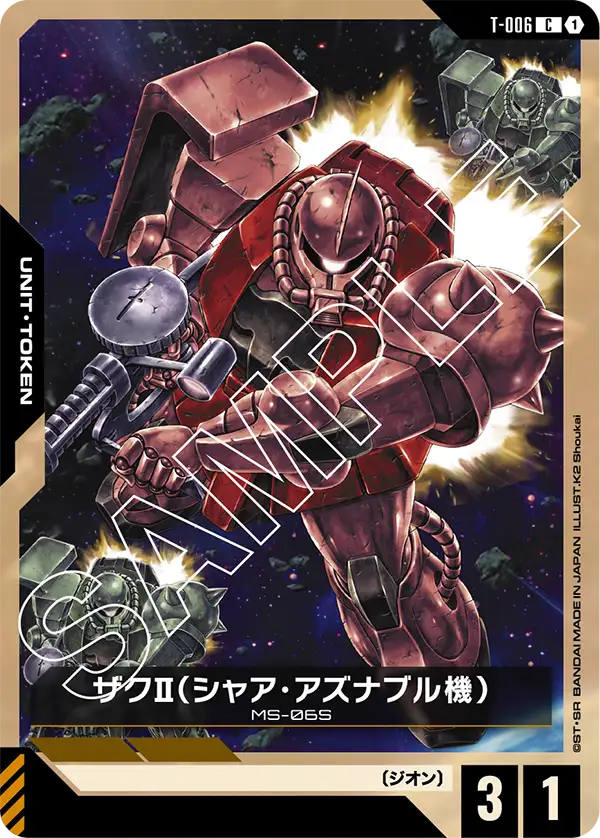
青/白 5.5弾 511デッキ（割合 15.1%）・5弾 1,460デッキ


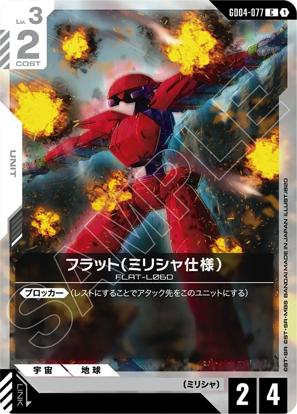
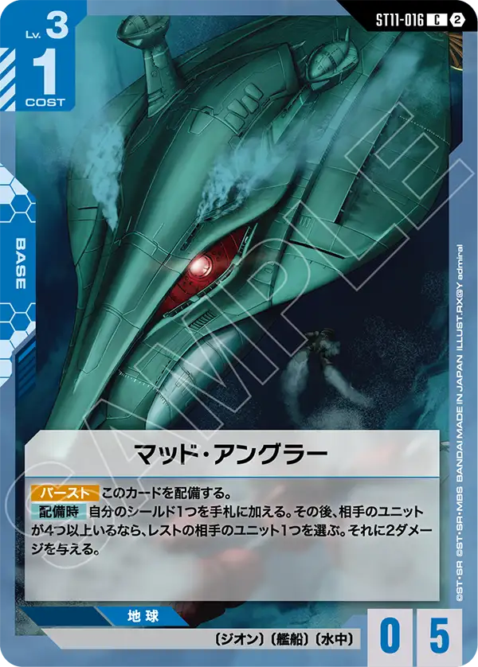
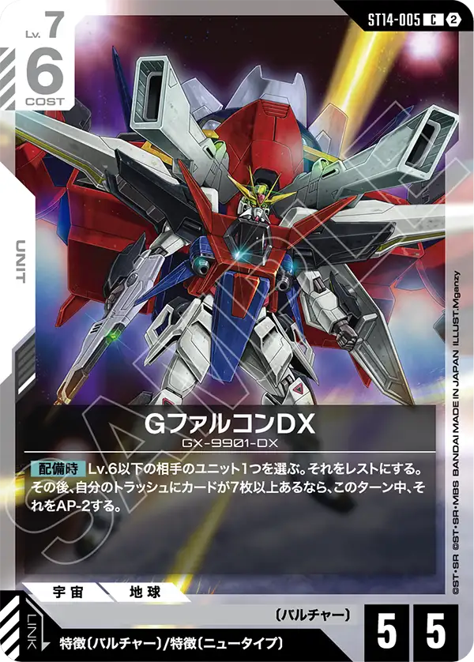
青白はやはり事前評価が最も高かったストライクフリーダムガンダム[GD05-002]とキラ・ヤマト[GD05-081]が採用上位に入っている。
事前評価通り非常に強力なカードでそれら周辺で採用されている〔オーブ〕のカードたちもキラ・ヤマト[GD05-081]とリンクさせることができるカードが複数種いることから非常に強固なカード群といえる。
5.5弾からの急上昇はフラット（ミリシャ仕様）[GD04-077]と言うことで5.5弾ではアグロが増えることを反映した結果と言える。
終盤はストライクフリーダムガンダム[GD05-002]とキラ・ヤマト[GD05-081]があまりにも強力なため序盤を支える事ができるフラット（ミリシャ仕様）[GD04-077]は重要な要素となっているようだ。
また、GD06では白で初と言えようHP6ベースのソレイユ[GD06-130]でフラット（ミリシャ仕様）[GD04-077]も持っている〔ミリシャ〕が参照されているので今後も要注目と言えよう
また、型は変わる可能性が高いが序盤中盤を支えるブロッカーに関してハリー・オード[GD06-097]が非常に強力な相棒となっていることも覚えておきたい。
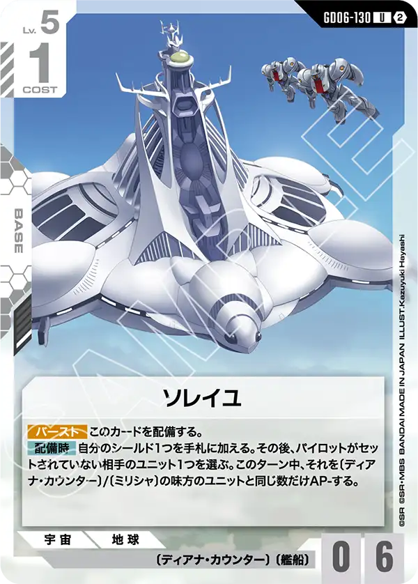
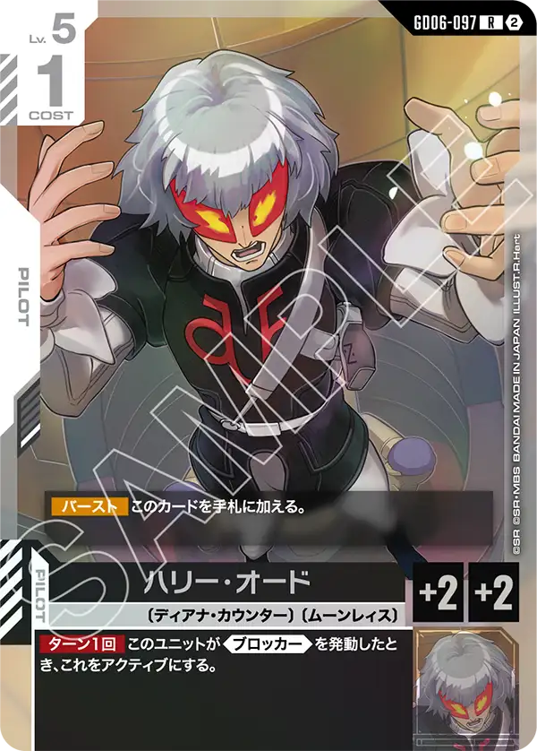
スタートデッキからはマッド・アングラー[ST11-016]とGファルコンDX[ST14-005]が採用されている。
マッド・アングラー[ST11-016]は対アグロに関してHP2が多いことに着目してそれを破壊でき、ベースとしてもステータス的に問題が無いこのカードが採用されたのだろう。
GファルコンDX[ST14-005]はリンク条件が「特徴〔ニュータイプ〕」と言う広い範囲で活躍ができることから採用されたのだろう、また効果も優秀でAPを下げる効果も持つため、通常であれば相打ちになるような状態でもこのカードであれば相手だけを破壊できるカードに変わる。
青/紫 5.5弾 497デッキ（割合 14.7%）・5弾 1,430デッキ


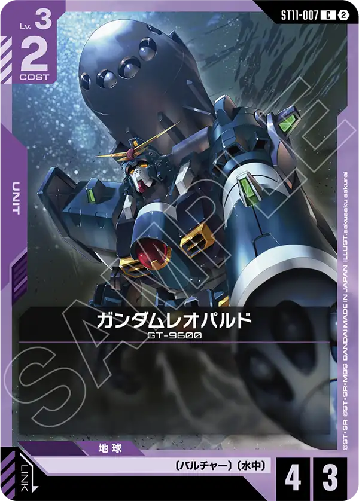
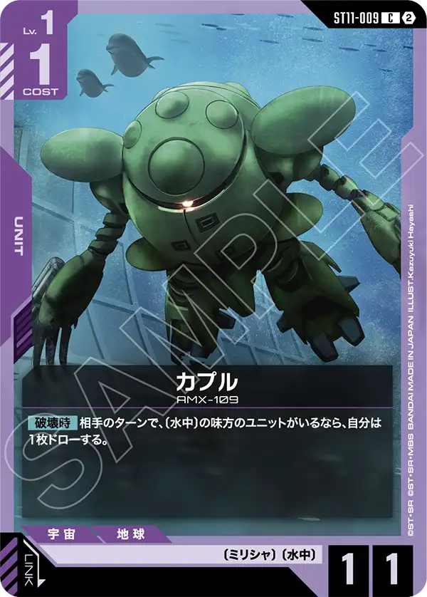
採用上位は先程も紹介したガンダム・バルバトスアダプト[GD03-056]と覚悟の表れ[GD01-100]、百錬[ST05-006]となっている。
5弾より前の環境からこれらのカードが採用されているため、そのまま引き継いだ形となるだろう。
青紫のカード群は幅が非常に広いため、アグロやミットレンジ、もう少し後ろめにも変化できるため様々なカードが採用されやすい状態にあるが、汎用性やステータスが優秀なこれらはどうしても外すことが出来なかったのだろう。
急上昇はアムロ・レイ[ST01-010]、三日月・オーガス[ST05-010]と禁止セットになっているこのカードのカードが急上昇した。
そのため自動的に三日月・オーガス[ST05-010]は採用されなかったと言う形になるが、それはスタートデッキで登場したカプル[ST11-009]が大きく関わっているだろう。
レベル1でAP1と言う平凡といえるステータスを持つこのカードだが、効果が非常に強く簡単に言えば相手ターンに破壊されたら1枚ドローと言うガンダムカードゲームで見ても異質なカード。プレイヤーが口々に「効果条件の記載を間違えている」と言われるカードで私もそう思う。
レベル1から積極的に攻めに移る事ができるカードが登場したことによりアグロ寄りのデッキが構築されるようになった。
そのため次ターン中にAPを上げるガンダム[ST01-001]が採用され、それに伴いアムロ・レイ[ST01-010]も採用されると言う流れになった。
ただし、勝率が思ったより振るわなかったのか入賞率は上がらなかったので、その数値だけ見れば地雷デッキと言う形になってしまうのだが、それだけの幅を見ることができるこのカラーには驚かされる。

青/緑 5.5弾 456デッキ（割合 13.4%）・5弾 1,553デッキ
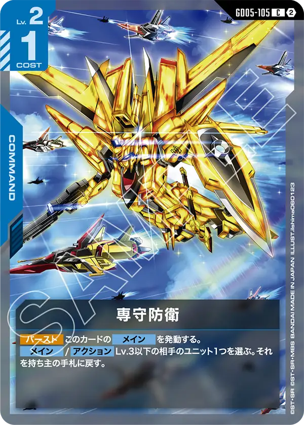
最後に青緑だが、採用カードはザクⅡ[ST03-008]、アムロ・レイ[ST01-010]、ガンダム[ST01-001]と言うことで以前から変わらないラインナップとなっている。
4弾環境ではアグロの代名詞と言われるこのデッキだったが、5弾ではνガンダム[GD05-017]と言う新しい相棒も獲得出来た、ただあまりにも暴れまわりすぎた結果か対策されすぎて入賞率はぐっと落ちてしまった。
急上昇カードは専守防衛[GD05-105]でこれは低いレベルからアグロデッキを相手に時間を稼ぐ事ができるため、その間に自分の強いタイミングにもつれ込ませることを目的に採用されている。
これを見ると対アグロデッキに関するカードが5.5弾環境では様々採用されているためガンダムカードゲームをプレイしているユーザーからみてアグロに対する感情がどのような物なのか伺い知れる。
スタートデッキからはハマーン・カーン[ST13-011]の1種のみ採用が目立つ形になっている。
これは前述したとおり、パイロットを手札に加える事ができる事がこのデッキに取って重要と言う事がわかる採用となっている。
ガンダム[ST01-001]のセット中効果やνガンダム[GD05-017]のセット時効果は非常に強力なのでこれらを何回使う事ができるのかが鍵となるデッキにはとても相性が良いカード言える。
パイロットの枚数も増やすことができるためνガンダム[GD05-020]の採用が今まで以上に今後増えていく可能性はあるので使っているプレイヤーは是非採用を考えていてほしい。
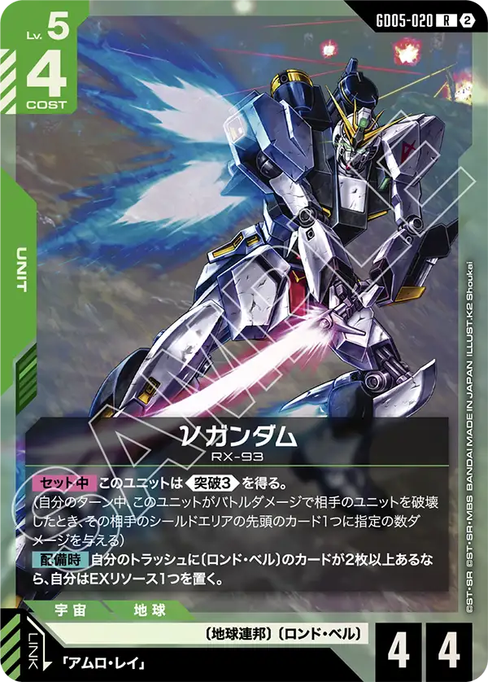
サンプルデッキ（5.5弾環境）
同じデッキカラーでも、入れているカードが大きく違うデッキがあります。5.5弾環境の入賞デッキを、カードの重なりでデッキカラーごとに「型」に分け、その色の10%以上を占める型について、型の中でほかのデッキといちばん重なりが大きい実際の入賞デッキを1本ずつ載せています。型の名前は、その型に特徴的なカードから付けています。画像を押すと、デッキビルダーでそのデッキを開けます。
赤/白 マスターガンダム型
5.5弾環境の赤/白の入賞デッキ829本のうち、この型は720本（87%）です。
カードの一覧
- ユニット: ガンダムマックスター×4、シャイニングガンダム×4、ライジングガンダム×4、シルヴァ・バレト×3、GFreD×2、マスターガンダム×4
- パイロット: ドモン・カッシュ×4、マスター・アジア×4
- コマンド: 機体奪取×3、溢れる慈愛×4、サイクロンパンチ×4、ダークネスフィンガー×4、シャイニングフィンガー×3
- ベース: 資源衛星パラオ×3
緑/紫 キュベレイ・サザビー型
5.5弾環境の緑/紫の入賞デッキ672本のうち、この型は381本（57%）です。
カードの一覧
- ユニット: ザクⅡ×4、リック・ドム×4、ガンダム・バルバトス（第1形態）×3、ザクⅡ（シャア・アズナブル機）×4、ガンダム・バルバトスアダプト×4、ガンダム・グシオンリベイク×4、ガンダム・フラウロス（流星号）×1、ジオング×4、サザビー×3、キュベレイ×3
- パイロット: 三日月・オーガス×4、シャア・アズナブル×4、ハマーン・カーン×3
- コマンド: 広域殲滅×1
- ベース: アクシズ×4
緑/紫 ファルメル・カプル型
5.5弾環境の緑/紫の入賞デッキ672本のうち、この型は184本（27%）です。
カードの一覧
- ユニット: カプル×3、ガンダムエクシアリペア×4、ホビー・ハイザック×4、ザクⅡ×4、ザクⅡ（シャア・アズナブル機）×1、リック・ドム×4、ガンダム・バルバトス（第1形態）×3、ザクⅡ（シャア・アズナブル機）×4、ガンダム・バルバトスアダプト×4、シャア専用ゲルググ×1、ジオング×4
- パイロット: シャア・アズナブル×4、三日月・オーガス×4、シャア・アズナブル×2
- ベース: ファルメル×4
緑/紫 ホビー・ハイザック型
5.5弾環境の緑/紫の入賞デッキ672本のうち、この型は80本（12%）です。
カードの一覧
- ユニット: カプル×4、ホビー・ハイザック×4、ザクⅡ×4、ザクⅡ（シャア・アズナブル機）×2、リック・ドム×4、ガンダム・バルバトス（第1形態）×4、ザクⅡ（シャア・アズナブル機）×4、ガンダム・バルバトスアダプト×4、シャア専用ゲルググ×1、ガンダム・フラウロス（流星号）×1、ジオング×4、サザビー×1
- パイロット: シャア・アズナブル×4、三日月・オーガス×4、シャア・アズナブル×2
- ベース: ファルメル×2、アクシズ×1
青/白 ストライクフリーダム型
5.5弾環境の青/白の入賞デッキ511本のうち、この型は435本（85%）です。
カードの一覧
- ユニット: ガンダム・ルブリス×4、リック・ディアス×4、フラット（ミリシャ仕様）×2、ストライクルージュ（キラ機）×1、ソードストライクガンダム×2、ガンダム×2、シルヴァ・バレト×4、エールストライクガンダム×4、フリーダムガンダム×2、ストライクフリーダムガンダム×4
- パイロット: アムロ・レイ×3、キラ・ヤマト×4、キラ・ヤマト×4
- コマンド: 溢れる慈愛×4、予期せぬ出来事×1、覚悟の表れ×1
- ベース: アーガマ×4
青/紫 ストライクフリーダム・バルバトスルプス型
5.5弾環境の青/紫の入賞デッキ497本のうち、この型は281本（57%）です。
カードの一覧
- ユニット: グレイズ改×4、リゼル×3、ガンダム・バルバトス（第1形態）×3、百錬×4、ガンダム・バルバトスアダプト×4、ストライクルージュ（オオトリ装備）×2、ガンダム・グシオンリベイク×4、ガンダム・フラウロス（流星号）×2、ガンダム・バルバトスルプス×3、ストライクフリーダムガンダム×4
- パイロット: 三日月・オーガス×4、キラ・ヤマト×4
- コマンド: 覚悟の表れ×3、広域殲滅×2
- ベース: アクシズ×4
青/紫 バンシィ・デルタプラス型
5.5弾環境の青/紫の入賞デッキ497本のうち、この型は124本（25%）です。
カードの一覧
- ユニット: カプル×4、ガンタンク×4、ガンダムエクシアリペア×4、ジム×4、リゼル×4、百錬×4、ガンダムレオパルド×1、ガンダム・バルバトスアダプト×4、デルタプラス×4、ガンダム×3、ユニコーンガンダム2号機 バンシィ（デストロイモード）×2
- パイロット: アムロ・レイ×4、プルトゥエルブ×4
- コマンド: 覚悟の表れ×2
- ベース: コルシカ基地×2
青/緑 νガンダム型
5.5弾環境の青/緑の入賞デッキ456本のうち、この型は318本（70%）です。
カードの一覧
青/緑 ジオング型
5.5弾環境の青/緑の入賞デッキ456本のうち、この型は103本（23%）です。
カードの一覧
運営のひとこと
5弾～5.5弾では非常に強力なカードが複数種登場したこともあり、研究が好きなプレイヤーにとってはとても楽しい期間になったことだろう。
GD06が使えるようになったタイミングでも同様といえるが、GD06ではGD05のときのような程新しいデッキタイプは登場しにくいと思われるので既存のデッキをどのように強化するのかを楽しんでほしいと思っている。
GD06では直近入賞率の高くなかった赤青や過去猛威を奮っていた白緑のウィング採用の新型が結果を多少なりとも結果を残すのでは無いかと予想している。
これを読んでいるプレイヤーもどのデッキが新しく開発され、入賞するのか楽しみにしてほしい。
当サイトではGD06を含めた大会結果も継続して集計していくため、今後もサイトを楽しみにしてほしい。
数え方
対象は、8/1〜11/6に開催されたニュータイプチャレンジ 2026 MISSION4（8月開催）・ニュータイプチャレンジ 2026 MISSION4（9月開催）・シリアルカードチャレンジ（9月開催）・シリアルカードチャレンジ（10月開催）・ニュータイプチャレンジ 2026 MISSION5（11月開催）の入賞デッキです（デッキリストが公開されていない入賞デッキは数に入れていません）。入賞割合は、入賞デッキに占めるそのデッキカラーの割合です。
相性表は、同じ大会で上位4位に入った2つのデッキの順位を比べ、上の順位を勝ちと数えて作りました。直接対戦の結果ではありません。同じデッキカラーどうしの組と、同じ順位の組は数えていません。結果が16件以上ある大会（64名規模）は、公式の順位どおり各順位2名として比べています。
サンプルデッキの型は、デッキに入っているカードの種類の重なりで分けました。分け方の決まりを変えると、型の分かれ方が変わる可能性があります。
数字は当サイトが公式の大会結果から自動で集めた集計です。誤りに気づいたらXアカウント（@gcg_stats）のDMで教えてください。